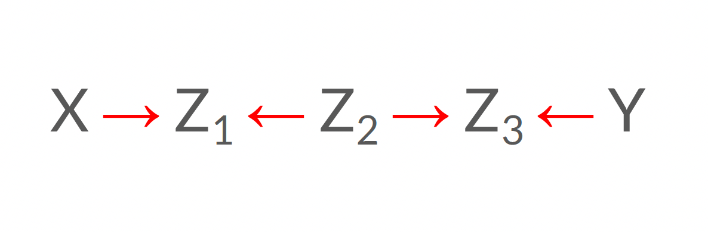
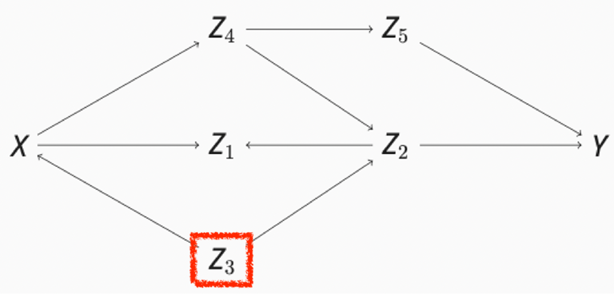

%%{init: {'flowchart' : {'curve' : 'linear'}}}%%
flowchart LR;
X((Éducation)) --> Y((Idéologie politique));
Les graphes orientés acycliques (GOA)
Méthodologie quantitative POL-2000
Laurence-Olivier M. Foisy & Adrien Cloutier
Université Laval
Aujourd’hui
Cours 11
- Présentation: Introduction à la causalité: Le problème fondamental de l’inférence causale
- Les graphes orientés acycliques (GOA)
- Termes clés
- Les types de chemins
- Exemples
Les graphes orientés acycliques (GOA)
Pourquoi?
Les trois fonctions des GOA
Déterminer si c’est possible d’identifier l’effet causale de la VD sur la VI
Identifier les variables de contrôle qui doivent être incluses dans le modèle statistique
Dessiner des GOA force le chercheur à révéler ses postulats théoriques de façon explicite et transparente
Comment?
- Par la connaissance, la littérature, l’intuition
Produire un GOA:
- Faire la liste des variables pertinentes pour la question de recherche
- Représenter graphiquement les relations causales entre ces variables
La relation entre l’éducation et l’idéologie politique
Étape 1: Faire la liste des variables pertinentes
Éducation augmente le revenu individuel
Revenu individuel augmente l’appui aux partis politiques qui promettent des baisses d’impôts
Revenu des parents augmente l’éducation de leurs enfants
Revenu des parents augmente le revenu de leurs enfants
Effet causal, ce qu’on veut étudier:
graph LR;
X(Éducation) --> Y(Idéologie politique);
Variables pertinentes:
graph LR;
X(Éducation, Variable indépendante, cause);
graph LR;
Y(Idéologie politique, Variable dépendante, effet);
graph LR;
Z1(Revenu des parents);
graph LR;
Z2(Revenu individuel);
Étape 2: Représenter les relations causales
Sources: la littérature scientifique, les connaissances du chercheur, la théorie, la logique, la passion, etc.
Relations causales:
graph LR;
X(Éducation) --> Z1(Revenu individuel);
graph LR;
Z1(Revenu individuel) --> Y(Droite politique);
graph LR;
Z2(Revenu des parents) --> X(Éducation);
graph LR;
Z2(Revenu des parents) --> Z1(Revenu individuel);
Étape 3: Dessiner le GOA
%%{init: {'flowchart' : {'curve' : 'linear'}}}%%
flowchart LR;
X((Éducation)) --> Z1((Revenu individuel));
X --> Y((Idéologie politique));
Z1 --> Y;
Z2((Revenu des parents)) --> X;
Z2 --> Z1;
Les deux caractéristiques des GOA
1. Orientés
2. Acycliques
Ces deux caractéristiques sont essentielles pour la validité causale des GOA. La preuve mathématique fonctionne seulement si ces deux conditions sont respectés.
Orientés
Les relations causales d’un GOA sont toujours unidirectionnelles
Quand deux relations causales se suivent, ont dit qu’elle forment un chemin
%%{init: {'flowchart' : {'curve' : 'linear'}}}%%
graph LR;
linkStyle default interpolate basis
A((A)) --> B((B));
B --> C((C));
C est une variable descendante de A et B est une variable descendante de A
A et B sont l’ancêtre de C
Si il n’y a pas de chemin entre A et C alors il n’y a pas de causalité
%%{init: {'flowchart' : {'curve' : 'linear'}}}%%
flowchart LR;
A((A)) --> B((B));
C((C)) --> B;
Acycliques
- Il ne peut pas y avoir de circuit
- Les flèches ne doivent pas nous faire revenir sur nos pas, pas de loops
Bon exemple:
%%{init: {'flowchart' : {'curve' : 'linear'}}}%%
flowchart LR;
A((A)) --> B((B));
B --> D((D));
B --> C((C));
Mauvais exemple:
%%{init: {'flowchart' : {'curve' : 'linear'}}}%%
flowchart LR;
A((A)) --> B((B));
B --> D((D));
B --> C((C));
C --> A;
Effet causal vs information statistique
Effet causal vs information statistique
La causalité circule dans un sens seulement mais l’information statistique peut circuler dans les deux sens
%%{init: {'flowchart' : {'curve' : 'linear'}}}%%
flowchart LR;
x(Température) --> y(Vente de crème glacée);
x --> z(Mercure);
Savoir que le mercure est élevé peut donner une bonne indice que la vente de crème glacée va augmenter mais ça ne veut pas dire que le mercure cause la vente de crème glacée
Trois types de chemins
- Fourchette
%%{init: {'flowchart' : {'curve' : 'linear'}}}%%
flowchart LR;
A((A)) --> B((B));
A --> C((C));
Ouvert!
- Chaîne
%%{init: {'flowchart' : {'curve' : 'linear'}}}%%
flowchart LR;
A((A)) --> B((B));
B --> C((C));
Ouvert!
- Collision
%%{init: {'flowchart' : {'curve' : 'linear'}}}%%
flowchart LR;
A((A)) --> B((B));
C((C)) --> B;
Fermé!
Conclusions
- Les chaînes et fourchettes sont ouvertes mais les collisions sont fermées
- Quand un modèle de régression contrôle le maillon central, il renverse le flot d’information. Un chemin fermé devient ouvert et un chemin ouvert devient fermé
Chemin ouvert ou fermé
- Ouvert == l’information statistique circule entre A et C.
- Fermé == l’information statistique ne circule PAS entre A et C.
Contrôler pour le maillon central d’un chemin RENVERSE le flot d’information:
- Chemin ouvert devient fermé.
- Chemin fermé devient ouvert.
%%{init: {'flowchart' : {'curve' : 'linear'}}}%%
flowchart LR;
X((Comportements risqués X)) --> Z((Ne pas porter sa ceinture Z));
Z --> Y((Se blesser gravement Y));
Chemin ouvert ou fermé
Pour signifier qu’on contrôle pour une variable, on l’encadre
Non contrôlé
%%{init: {'flowchart' : {'curve' : 'linear'}}}%%
flowchart LR;
X((Comportements risqués X)) --> Z((Ne pas porter sa ceinture Z));
Z --> Y((Se blesser gravement Y));
L’information statistique circule
Contrôlé
%%{init: {'flowchart' : {'curve' : 'linear'}}}%%
flowchart LR;
X((Comportements risqués X)) --> Z[Ne pas porter sa ceinture Z];
Z --> Y((Se blesser gravement Y));
L’information statistique ne circule plus
Chemin ouvert ou fermé
%%{init: {'flowchart' : {'curve' : 'linear'}}}%%
flowchart LR;
X((Comportements risqués X)) --> Z((Ne pas porter sa ceinture Z));
Z --> Y((Se blesser gravement Y));
Ici le chemin est ouvert donc l’information statistique circule entre les deux extrémité. Savoir que le comportement est rsiqué donne de l’information sur les chances de se blesser gravement et savoir que la personne est blessée gravement indique qu’il y a peut-être eu un comportement risqué.
Chemin ouvert ou fermé
%%{init: {'flowchart' : {'curve' : 'linear'}}}%%
flowchart LR;
X((Comportements risqués X)) --> Z[Ne pas porter sa ceinture Z];
Z --> Y((Se blesser gravement Y));
Ici le chemin est fermé donc l’information statistique ne circule pas entre les deux extrémité. Si on sait que la personne portait sa ceinture et qu’elle s’est blessée gravement, ça ne nous donne pas d’information sur le comportement risqué.
Fourchette
Une fourchette c’est une cause avec deux effets
%%{init: {'flowchart' : {'curve' : 'linear'}}}%%
flowchart LR;
x(Température) --> y(Vente de crème glacée);
x --> z(Mercure);
L’information statistique circule entre les deux extrémité donc le chemin est ouvert
Si on contrôle le maillon central, on ferme le chemin
Quand on fixe le maillon central, la température, les variation de mercure nous donne plus aucune information sur les ventes de crème glacée
Chaîne
Une séquence de deux relations causales
%%{init: {'flowchart' : {'curve' : 'linear'}}}%%
flowchart LR;
x(Consommation de sucre) --> y(Diabète de type 2);
y --> z(Risque de maladies cardiovasculaires);
Une chaine est ouverte,l’information y circule entre les extremités
Connaître la cause donne de l’info sur l’effet
Connâitre l’effet donne de l’info sur la cause
Contrôler le maillon central ferme le chemin. Si je sais qu’un patient a une maladie cardiovasculaire mais pas de diabète alors je sais que la cause n’est pas la surconsommation de sucre
Collision
Deux causes et un effet
%%{init: {'flowchart' : {'curve' : 'linear'}}}%%
flowchart LR;
x(Performance de l'équipe) --> y(victoire);
z(Biais de l'arbitre) --> y;
La collision est fermée parce que l’info statistique ne circule pas des deux bords.
Par contre si on controle le milieu, Admetton qu’on sait que la performance de l’équipe était nulle et qu’ils ont gagné, ça peut indiquer que l’arbitre était potentiellement biaisé
Fourchettes, Chaînes et collisions
%%{init: {'flowchart' : {'curve' : 'linear'}}}%%
flowchart TD;
subgraph Fourchettes
subgraph Ouvert
y1((y)) --> x1((x));
y1((y)) --> z1((z));
end
subgraph Fermé
x6((x)) --> y6[y];
z6((z)) --> y6;
end
end
%%{init: {'flowchart' : {'curve' : 'linear'}}}%%
flowchart TD;
subgraph Chaînes
subgraph Ouvert
x2((x)) --> y2((y));
y2 --> z2((z));
end
subgraph Fermé
x5((x)) --> y5[y];
y5 --> z5((z));
end
end
%%{init: {'flowchart' : {'curve' : 'linear'}}}%%
flowchart TD;
subgraph Collisions
subgraph Fermé
x3((x)) --> y3((y));
z3((z)) --> y3;
end
subgraph Ouvert
x4((x)) --> y4[y];
z4((z)) --> y4;
end
end
Un chemin peut être composé d’une infinité de combinaison de fourchettes, chaines, et collisions. Le chemin est ouvert si tout est ouvert et fermé si un des lien est fermé.
Les contrôles
Les deux conditions
- Ne pas contrôler pour un descendant de X
- Permet de déterminer quels variables exclure du modèle statistique
- Fermer tous les chemins par porte arrière (Controler les maillons centraux)
- Permet de déterminer quelles variables inclure dans le modèle statistique
Ne pas contrôler les descendants de X
Disons que le genre influence le salaire et l’occupation et que l’occupation influence le salaire. Si on controle pour l’occupation, on vient juste observer l’effet du genre sur le salaire mais on obstrue l’effet du genre sur l’occupation sur le salaire. On coupe une part importante de l’effet du genre sur le salaire.
%%{init: {'flowchart' : {'curve' : 'linear'}}}%%
flowchart LR;
x(Genre) --> z(Occupation);
x --> y(Salaire);
z --> y;
Fermer les chemins par la porte arrière
C’est quoi?
- Un chemin qui lie X à Y
- Une des extrémité pointe vers X
Les backdoors sont les causes de notre cause. On ne veut pas voir les effets des causes sur nos causes.
Fermer les backdoors
Faire une liste de tous les chemins qui lient la cause à l’effet
Est-ce que certains chemins pointent vers X?
Est-ce que ces chemins sont ouverts ?
Fermer les chemins par la porte arrière (Suite)
Relations de l’éclatement familial sur l’itinérance
%%{init: {'flowchart' : {'curve' : 'linear'}}}%%
flowchart LR;
x(Éclatement familial) --> y(itinérance);
z(Santé mentale) --> y;
z --> x;
Ici si on controle pour la santé mentale. On sait que c’est vrm l’éclatement familiale qui a causé l’itinérance et non la santé mentale qui a causé l’éclatement qui a causé l’itinérance
Exemple
- Ne pas contrôler pour un descendant de X
- Fermer tous les chemins par porte arrière
%%{init: {'flowchart' : {'curve' : 'linear'}}}%%
flowchart LR;
X((Éducation)) --> Z1((Revenu individuel));
X --> Y;
Z1 --> Y((Idéologie politique));
Z2((Revenu des parents)) --> X;
Z2 --> Z1;
Exemple (Réponse)
- Ne pas contrôler pour un descendant de X
- Fermer tous les chemins par porte arrière
%%{init: {'flowchart' : {'curve' : 'linear'}}}%%
flowchart LR;
X((Éducation)) --> Z1((Revenu individuel));
X --> Y;
Z1 --> Y((Idéologie politique));
Z2[Revenu des parents] --> X;
Z2 --> Z1;
De la pratique
Ouvert ou fermé?
Ouvert!
Ouvert ou fermé?
Fermé!
Ouvert ou fermé?
Ouvert!

Ouvert ou fermé?
Fermé!

Rappelez-vous
Contrôler pour le maillon central d’une collision ouvre un chemin
Rappelez-vous
Contrôler pour le maillon central d’une collision ouvre un chemin
Contrôler ou pas?
La marche à suivre pour savoir quoi contrôler
- Faire la liste des variables pour lesquelles il faut ÉVITER de contrôler
- Tous les descendants de X
- Faire la liste de tous les chemins par porte arrière
- Tous les chemins qui vont de X à Y et qui ont une flèche qui pointe vers X
- Est-ce qu’il y a des chemins par porte arrière qui sont ouverts?
- Dès qu’il y a une collision, le chemin est fermé
- Est-il possible de bloquer ces chemins?
- Donc… est-ce que l’effet causal de X sur Y est identifiable?
Contrôler ou pas?
- Y a-t-il des descendants de X?
- Y a-t-il des chemins par porte arrière?
- Y a-t-il des chemins par porte arrière ouverts?
- Est-il possible de bloquer ces chemins?
- L’effet causal de X sur Y est-il identifiable?

Contrôler ou pas?
- Y a-t-il des descendants de X? Oui, Z1, Z2, Z4 et Z5
- Y a-t-il des chemins par porte arrière? Oui, Z3
- Y a-t-il des chemins par porte arrière ouverts? Oui, Z3
- Est-il possible de bloquer ces chemins? Oui, si on contrôle Z3
- L’effet causal de X sur Y est-il identifiable? Si on contrôle Z3!

Contrôler ou pas?
- Y a-t-il des descendants de X?
- Y a-t-il des chemins par porte arrière?
- Y a-t-il des chemins par porte arrière ouverts?
- Est-il possible de bloquer ces chemins?
- L’effet causal de X sur Y est-il identifiable?
Contrôler ou pas?
- Y a-t-il des descendants de X? Oui, Z1, Z2, Z3
- Y a-t-il des chemins par porte arrière? Oui, Z4
- Y a-t-il des chemins par porte arrière ouverts? Oui, Z4
- Est-il possible de bloquer ces chemins? Oui, si on contrôle Z4
- L’effet causal de X sur Y est-il identifiable? Oui, si on contrôle Z4
Contrôler ou pas?
- Y a-t-il des descendants de X?
- Y a-t-il des chemins par porte arrière?
- Y a-t-il des chemins par porte arrière ouverts?
- Est-il possible de bloquer ces chemins?
- L’effet causal de X sur Y est-il identifiable?
Contrôler ou pas?
- Y a-t-il des descendants de X? Oui, Z1
- Y a-t-il des chemins par porte arrière? Oui, Z3
- Y a-t-il des chemins par porte arrière ouverts? Oui, Z3
- Est-il possible de bloquer ces chemins? Oui, si on contrôle Z3
- L’effet causal de X sur Y est-il identifiable? Oui, si on contrôle Z3

En résumé
- Dessiner un GOA:
- Faire la liste des variables pertinentes pour la question de recherche
- Représenter graphiquement les relations causales entre ces variables
- Contraintes:
- Orienté
- Acyclique
- Types de chemins
- Fourchette - ouvert
- Chaîne - ouvert
- Collision - fermé
- Contrôles:
- Ne pas contrôler pour un descendant de X
- Fermer tous les chemins par porte arrière
Travail de fin de session
Travail de fin de session
Vous devrez inclure un GOA!
- Dessiner les noeuds et les flèches selon la logique
- Vous pourrez ensuite lire des articles scientifiques pour compléter
- En plus de votre X et Y, votre GOA doit inclure 3 autres variables qui pourraient être associées à la VD.
- Il n’est pas nécessaire que ces variables existent dans la base de données obligatoire
- Mais au moins une!
- Votre base de données choisit devrait être votre premier réflexe
- Si votre GOA indique qu’aucun contrôle est nécessaire… aucun contrôle est nécessaire!
Travail de fin de session
- Si votre résultat n’est pas significatif?
- Cool! C’est AUSSI une contribution à la science
- Petit n (échantillon) et grand N (population)
- _constant == l’intercept
Simulations
Simulation Chaîne
Simulation Collision
%%{init: {'flowchart' : {'curve' : 'linear'}}}%%
flowchart LR;
X((X)) -- 1.7 --> Y((Y));
Y -- 0.8 --> Z((Z));
X -- 1.2 --> Z;
X
1.692331 X Z
0.4532641 0.4868342 Simulation Fourchette
%%{init: {'flowchart' : {'curve' : 'linear'}}}%%
flowchart LR;
X((X)) -- 2 --> Z1((Z1));
Z1 -- 0.25 --> Y((Y));
Z2((Z2)) -- 1 --> Y;
Z2 -- 1 --> X;
Z2 <- rnorm(n)
X <- Z2 + rnorm(n)
Z1 <- 2 * X + rnorm(n)
Y <- 0.25 * Z1 + Z2 + rnorm(n)
mod <- lm(Y ~ X + Z2)
coef(mod) X Z2
0.4997197 0.9927905 X
0.4540567 Simulation complexe
%%{init: {'flowchart' : {'curve' : 'linear'}}}%%
flowchart LR;
X((X)) -- 2 --> Z2((Z2));
Z2 -- 0.5 --> Y((Y));
Z2 -- 1 --> Z3((Z3));
Y -- 1 --> Z3;
Z1((Z1)) -- 1 --> Y;
Z1((Z1)) -- 1 --> X;
- Y a-t-il des descendants de X?
- Y a-t-il des chemins par porte arrière?
- Y a-t-il des chemins par porte arrière ouverts?
- Est-il possible de bloquer ces chemins?
- L’effet causal de X sur Y est-il identifiable?
Simulation complexe
%%{init: {'flowchart' : {'curve' : 'linear'}}}%%
flowchart LR;
X((X)) -- 2 --> Z2((Z2));
Z2 -- 0.5 --> Y((Y));
Z2 -- 1 --> Z3((Z3));
Y -- 1 --> Z3;
Z1((Z1)) -- 1 --> Y;
Z1((Z1)) -- 1 --> X;
- Y a-t-il des descendants de X? Oui, Z2 et Z3
- Y a-t-il des chemins par porte arrière? Oui, Z1
- Y a-t-il des chemins par porte arrière ouverts? Oui, Z1
- Est-il possible de bloquer ces chemins? Oui, si on contrôle Z1
- L’effet causal de X sur Y est-il identifiable? Oui, si on contrôle Z1
Simulation complexe - PREUVE
%%{init: {'flowchart' : {'curve' : 'linear'}}}%%
flowchart LR;
X((X)) -- 2 --> Z2((Z2));
Z2 -- 0.5 --> Y((Y));
Z2 -- 1 --> Z3((Z3));
Y -- 1 --> Z3;
Z1((Z1)) -- 1 --> Y;
Z1((Z1)) -- 1 --> X;
Z1 <- rnorm(n)
X <- Z1 + rnorm(n)
Z2 <- 2 * X + rnorm(n)
Y <- 0.5 * Z2 + Z1 + rnorm(n)
Z3 <- Z2 + Y + rnorm(n)
mod <- lm(Y ~ X + Z1)
coef(mod) X Z1
0.9988066 1.0032431 X
1.501001 Prochain cours
Messages
- Rencontres individuelles la semaine prochaine!!
- Pas de cours en classe.
- Prenez rendez-vous déjà avec Camille Pelletier (Mac), Alexandre Bouillon (PC), Adrien Cloutier.
- Arrivez avec votre GOA, du code, des graphiques, un début de travail!
- Dans 2 semaines: Exam 3 (18 avril). Ce sera exactement le même format que l’exam 2 (papier crayon). Ils ont 1h encore. Ça peut couvrir la matière du cours 1 jusqu’à ton cours 12 sur les GOA (inclusivement). Pour étudier:
- Faire les Datacamp
- Faire les lectures
- Relire les diapos
- Être capable de rouler le code qu’on a fait en classe et en comprendre la logique.
Messages
- Dans 3 semaines: Travail final + Datacamp complété pour le vendredi 26 avril 23h59.
- Prennez de l’avance dans le travail final. Coder peut être long.
Les Graphes Orientés Acycliques (GOA) | POL-2000
Comment déterminer si un chemin est ouvert ou fermé